Дисперсія та середньоквадратичне відхилення для вибіркової сукупності
Зауваження: У попередньому прикладі розглядається дисперсія та середньоквадратичне відхилений для генеральної сукупності. Символи 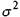та 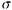 - букви грецького алфавіту, типові для позначення параметрів.
Дуже рідко ми можемо обчислити дійсні параметри генеральної сукупності. У більшості випадків, ми тільки можемо їх оцінити на основі вибіркової сукупності, обчисливши їх відповідні статистики.
Дисперсія та середньоквадратичне відхилення вибіркової сукупності також представляють міру розсіювання одержаних спостережень вибірки навколо їх середнього значення.
Вони обчислюються майже аналогічно відповідним числовим характеристикам генеральної сукупності.
Вибіркова дисперсія обчислюється за формулою
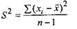 (8)
середньоквадратичне відхилення
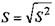 (9)
Для обчислення вибіркової дисперсії можна використовувати більш зручну формулу
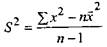 (10)
Якщо вибіркові дані згруповані і представлені у вигляді розподілу частот, то дисперсію та середньоквадратичне відхилення знаходять як
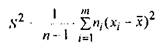 (11)
Зауважимо, що ми намагаємося використати значення 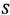 як оцінку 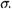 Однак, 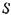- вибіркове середньоквадратичне відхилення буде ніби зміщеною ознакою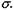
Із формул (6)-(11) випливає, що при досить великих п (об'єм вибірки), дисперсія генеральної сукупності 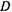та вибіркова дисперсія 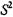 різняться дуже мало. Тому у практичних задачах виправлену дисперсію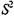та виправлене середньоквадратичне відхилення вибірки використовують лише при об'ємі вибірки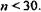
Проілюструємо техніку обчислення вище зазначених числових характеристик вибірки розглядаючи інші проблеми пана 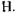, який прикладає зусилля, щоб допомогти своїм клієнтам прийняти рішення із вкладення інвестицій.
Приклад 3. Пан Н. намагається оцінити стабільність цін деяких цінних паперів. Свої судження відносно стабільності акцій він будує на визначенні середньоквадратичного відхилення від щоденних безпосередніх цін. Аналізуючи фінансові папери, пан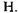 визначив, що акції, які було продано через біржу протягом останнього часу, мали різні поточні ціни впродовж декількох місяців.
Щоб не використовувати всю сукупність цін на акції, що зафіксована протягом кількох місяців, пан Н. зробив вибірку із семи днів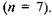 Зауважимо, що вибірка із
7 елементів дуже мала, але вона може служити інструментом аналізу.
Пан Н. зробив вибірку безпосередніх цін па акції, а саме: 87, 120, 54, 92,73, 80 та 63(грн.)
Розв'язання. Маємо 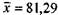 та
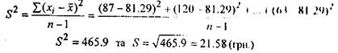
Інтерпретація. Пан Н. оцінив, що в середньому ціна на акцію дорівнює 81.29(грн.) з тенденцією зростання або спадання безпосередньої ціни на величину 21.58. Однак, зауважимо, що пан Н. може завжди інтерпретувати середньоквадратичне відхилення в 21.58(грн.) як можливу міру зростання безпосередньої ціни акції відносно її середньої ціни.